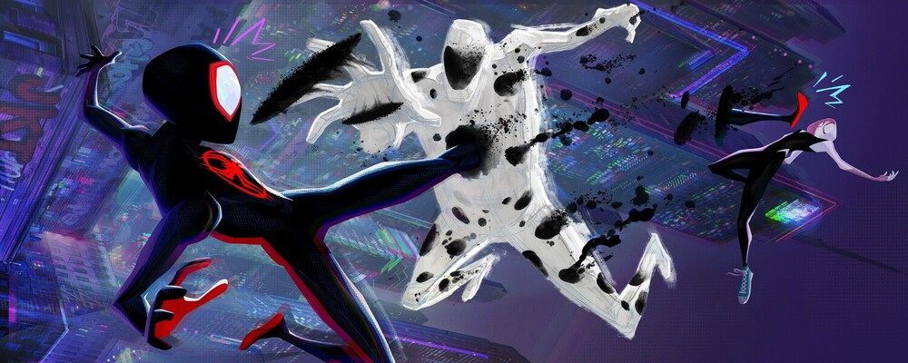

- Spider-man Across the Spider-Verse


"Spider-Man: In Verse about a Spider" is a sequel to the acclaimed animated film "Spider-Man: Into the Spider-Verse". The film follows Miles Morales, a teenager from Brooklyn who becomes the new Spider-Man after he is bitten by a radioactive spider. But Miles is not the only Spider-Man; he is soon joined by several other versions of the web-slinging hero from different dimensions. Together, they must team up to stop a threat that could destroy all of reality.
The animation style of this movie is breathtaking. It employs a unique blend of traditional and CGI animation that creates a stunning visual spectacle. The colors pop off the screen and the action is fluid and dynamic, making every scene a joy to watch.
But what makes this movie truly special is its heart. The characters are all well-developed and have their own unique personalities and motivations. The relationship between Miles and his mentor, Peter B. Parker, is one of the highlights of the film, and the other Spider-People all bring something unique and interesting to the table.
"Spider-Man: Into the Spider-Verse" is also filled with humor and Easter eggs that will delight fans of the character and the comic book genre as a whole. The film is a love letter to Spider-Man fans and to superhero fans in general.
Overall, "Spider-Man: Into the Spider-Verse" is a triumph. It is a movie that proves that superhero stories can be told in new and exciting ways, and that animation is just as capable of delivering emotional and impactful stories as live-action. This movie is a must-watch for fans of Spider-Man and superhero movies in general, and it is a film that will stand the test of time as a true classic. Release date postponed to June 1, 2023